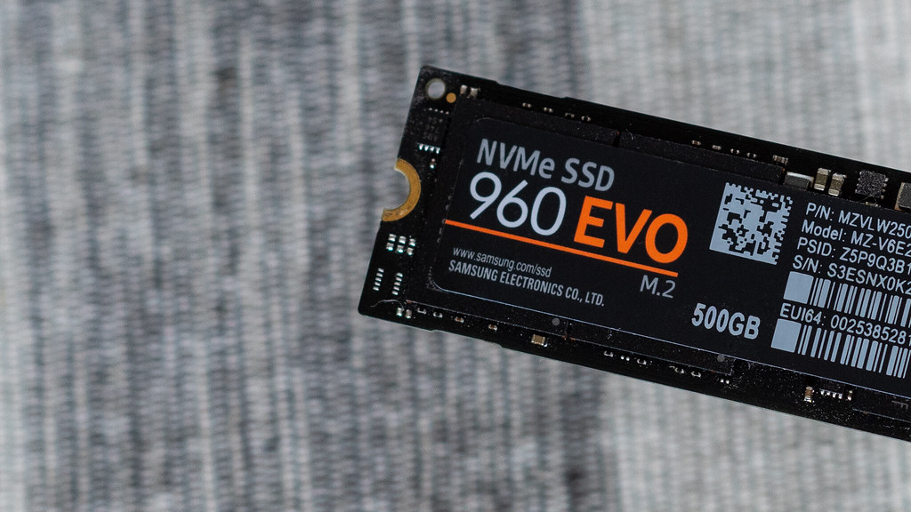

SSD: Almacenamiento de Alto Rendimiento
Módulo educativo para la infraestructura del computador de desarrollo

¿Qué es?
Una Unidad de Estado Sólido (SSD) es un dispositivo de almacenamiento secundario no volátil que utiliza memoria flash NAND para conservar los datos de forma permanente. A diferencia de los discos duros mecánicos (HDD), no posee partes móviles en su interior.
Función Principal
Guardar el sistema operativo, las herramientas de desarrollo, librerías y proyectos. Su ventaja competitiva radica en tiempos de acceso casi instantáneos y velocidades de transferencia extremadamente elevadas.
Importancia para la Programación
Los proyectos de programación modernos constan de miles de pequeños archivos dispersos (por ejemplo, la carpeta node_modules en JavaScript). Un SSD permite indexar, buscar, leer y escribir estos archivos en fracción de segundos, reduciendo drásticamente el tiempo de inicio del sistema y la carga del IDE.
Recomendación para Estudiantes ADSO
Se recomienda utilizar como unidad principal un SSD NVMe M.2 de 500 GB o 1 TB. Esta capacidad asegura suficiente espacio para particiones de Linux/Windows, contenedores Docker y repositorios locales.
¿Sabías que...?
Mientras un disco duro tradicional HDD alcanza velocidades de lectura cercanas a los 120 MB/s, un SSD NVMe PCIe 4.0 puede superar los 7,000 MB/s, ¡siendo casi 60 veces más rápido!